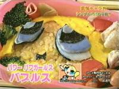

その他メモとか、未確認情報とか (2007/07追加）
テレビ東京の「日曜ビックバラエティ」2007年7月22日放送「あったか愛情弁当物語」で作られたキャラ弁当がバブルス
バラエティ「カートゥンKAT-TUN」7月放送分にて、ゲストのコレクションにPpGの大きいフィギュア登場
アニメ「ギャグマンガ日和」の第2話などで流れるサウンドがPPGっぽい
アニメ「大江戸ロケット」15話にて、アミユミ（OPがパフィーなのでそのつながり？）
チーカマなバターカップArkham Asylumのblog より転載）
「イルマーレ 」というキアヌ・リーブス主演映画に、一瞬ＰＰＧのアニメが写る場面があるという。
こんなとこにもロビン
こんなとこにもフランキー？＞その1 、その２
こんなとこにもフォスターズホーム（ブンブンマギー）＞■
ぽにぽにダッシュ10話にPPG??（未確認）
Aqua Teen Hunger Forceの劇場版映画にパワパフ（パラシュートのとこらしいが）？
アニメキョロちゃんの〈となりの田中さん2〉で最後のワンカットにでてくる新聞にppgが載ってるらしい（第36話かな？）
パワパフではないですが、こんなところに AmiYumi＞ Nhat ky ve Cartoon
アニメ・Mr.ビーン５話「日光浴」にパワパフっぽいのが出てるとの噂
映画「ホットチック」にPPGシャツ着たオヤジが出てるらしい
オンラインマンガ誌「コミックシード 」に連載の「WHITE
CHAOS」 にパワパフやらカートゥーンやらの小ネタがいっぱい。（単行本になってから捕獲予定）
漫画家の山中あきらのトップ絵ギャラリーの2006年7月がパフ化絵
メダロットの紹介無料誌にこんな三人娘が！
（どうやらはGBA用ソフト「メダロットナビ｣に登場するようだ・未確認）「ミッキーの三銃士」の特典映像にてパワパフ
「絶叫計画シリーズ」の第２弾に、バブルスとブロッサムがいるらしい。
香港のジョニー・トー監督が撮った『ターンレフト・ターンライト』という映画。
Ciudad Pixelada
- EN CONSTRUCCION パワパフを探せ！2カ所にいますよー、見つけられるかな？ 某ゲームセンターにて。子供を狙うユートニウム博士（笑）＞■ ▲
もう一発。詐欺師なユートニウム博士＞「詐欺」―悪(ワル)の手口と撃退マニュアル
同心堂電脳館 の裏ギャラリーにてガンスリングガールパフ１ ・２ （※このページは大丈夫ですが、基本的に18禁絵コーナーなのでご注意ください）貴婦人カッター のサップパロこーなー にて、#024「パワーパフガールズ」アビディ猪木祭り3出場記念
「Megas
XLR 」＃15「The Return」に出てきたビデオ「Cuddly Bearz」がパワパフっぽい＞■
AUのケータイ3012CAのメニューにバターカップ
サンキュ〜、サンサンガ〜ルズ !!（コドモ電波相談室 ）
ワルキューレがパワパフ＞へなちょこQ（レトロゲームグラフィック＃２ ）
デクスターズラボにパワパフ＞カートゥーン横丁（元ネタ探偵団 ）
ブラジルのお偉いさん（大臣とか）がパフ化＞■
「ホットチック 」という映画の中でPPG柄ピチT姿のオヤジが大暴れ。
とらの穴 「透明ブックスカバー美品くん」の案内イラストの虎耳の女の子が持ってる本が、パフ化。（現在は見れません）
パワーパフキャル もりけんさんのＨＰ「Ｍ’ｓＣＡＦＥ 」にて。水玉蛍之丞のどんなもんありゃ〜すかぁ Powerpuff@Japanese のこと。
とっとこハム太郎 第183話「とっとこちびくり！雪まつり」の回にて登場した「ギャルガラス」がパワパフモドキだったらしい。第199話「とっとこだばっと！ヒーローハム」にも再登場。
パロディフラッシュ「とらぶるウィンドウズ」の中で「パワパフウィンドウズ」つうパワパフのパロが。さらに、その画面でXPをクリックすると、3人娘に。
でんじゃらすじーさん のシルエットがパワパフっぽい。（まあこれは偶然の一致ですが）Gポイント かつて、イラストの説明おねいさんがパワパフモドキだった。. 2003年度末、米国で流れたオルセン姉妹のプロモCMがパワパフパロだった＞■ 「おさとう・スパイス・すてきなものにケミカルX で博士はガールズをつくりあげた。実業家精神旺盛な博士はさっそくガールズをハリウッドに売りこもうとしたが,
ガールズは役者としては大根だったので, アニメ番組『オルセン三姉妹』のスタントとして働くことになった..」 という内容だったらしい（massangeanaさんの報告より）
富沢ひとし オマケ漫画「プロペラ天国 」のさらにオマケ漫画「プロペラ地獄 第5回 」
PowerPunkGirls というTシャツが売られていたようだ。（2004.2のプレビューズにて発見）。コミック＃50のものとは別物。ジュニアブランドのデイジーラバーズ（DAISY LOVERS）のキャラの中にバブルスモドキ （316-056
ミニステッカー)が。
[PR]動画
{kind=link}
{kind=link}
{kind=link}
{kind=link}
{kind=link}
{kind=link}
{kind=link}